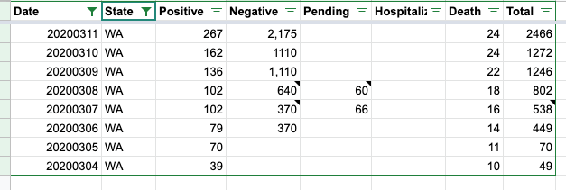

WA historical deaths
Washington state reported its first deaths on March 4, but the data doesn’t include any deaths until March 11. I checked the Seattle Times daily updates for each of those dates and came up with this:
"2020-03-04": 10, // https://www.seattletimes.com/seattle-news/health/coronavirus-daily-update-march-4-what-we-know-so-far-about-covid-19-in-the-seattle-area-washington-state-and-the-nation/
"2020-03-05": 11, // https://www.seattletimes.com/seattle-news/health/coronavirus-daily-news-update-march-5-what-to-know-today-about-covid-19-in-the-seattle-area-washington-state-and-the-nation/
"2020-03-06": 14, // https://www.seattletimes.com/seattle-news/health/coronavirus-daily-news-update-march-6-what-to-know-today-about-covid-19-in-the-seattle-area-washington-state-and-the-nation/
"2020-03-07": 16, // https://www.seattletimes.com/seattle-news/coronavirus-deaths-in-washington-now-at-16-with-102-confirmed-cases/
"2020-03-08": 18, // https://www.seattletimes.com/seattle-news/health/coronavirus-daily-news-update-march-8-what-to-know-today-about-covid-19-in-the-seattle-area-washington-state-and-the-nation/
"2020-03-09": 22, // https://www.seattletimes.com/seattle-news/health/coronavirus-daily-news-update-march-9-what-to-know-today-about-covid-19-in-the-seattle-area-washington-state-and-the-nation/
"2020-03-10": 24 // https://www.seattletimes.com/seattle-news/health/coronavirus-daily-news-update-march-10-what-to-know-today-about-covid-19-in-the-seattle-area-washington-state-and-the-nation/
We started tracking around March 11. The CDC has also retrospectively reclassified some deaths as COVID deaths.
I think the first reported death was actually Feb 29: https://www.nbcnews.com/news/us-news/1st-coronavirus-death-u-s-officials-say-n1145931
On Mar 20, 2020, at 7:59 PM, Katherine Senzee notifications@github.com wrote:
Washington state reported its first deaths on March 4, but the data doesn’t include any deaths until March 11. I checked the Seattle Times daily updates for each of those dates and came up with this:
"2020-03-04": 10, // https://www.seattletimes.com/seattle-news/health/coronavirus-daily-update-march-4-what-we-know-so-far-about-covid-19-in-the-seattle-area-washington-state-and-the-nation/ "2020-03-05": 11, // https://www.seattletimes.com/seattle-news/health/coronavirus-daily-news-update-march-5-what-to-know-today-about-covid-19-in-the-seattle-area-washington-state-and-the-nation/ "2020-03-06": 14, // https://www.seattletimes.com/seattle-news/health/coronavirus-daily-news-update-march-6-what-to-know-today-about-covid-19-in-the-seattle-area-washington-state-and-the-nation/ "2020-03-07": 16, // https://www.seattletimes.com/seattle-news/coronavirus-deaths-in-washington-now-at-16-with-102-confirmed-cases/ "2020-03-08": 18, // https://www.seattletimes.com/seattle-news/health/coronavirus-daily-news-update-march-8-what-to-know-today-about-covid-19-in-the-seattle-area-washington-state-and-the-nation/ "2020-03-09": 22, // https://www.seattletimes.com/seattle-news/health/coronavirus-daily-news-update-march-9-what-to-know-today-about-covid-19-in-the-seattle-area-washington-state-and-the-nation/ "2020-03-10": 24 // https://www.seattletimes.com/seattle-news/health/coronavirus-daily-news-update-march-10-what-to-know-today-about-covid-19-in-the-seattle-area-washington-state-and-the-nation/— You are receiving this because you are subscribed to this thread. Reply to this email directly, view it on GitHub, or unsubscribe.
WA has been updated accordingly: 
Thank you for the information! We will get that added to our data set as quickly as possible.